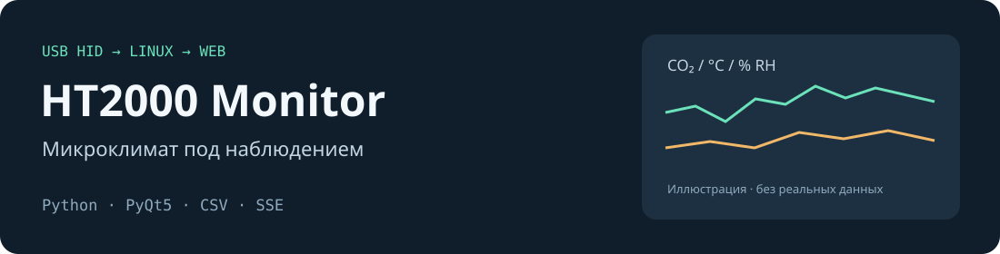

Всегда в трее
Крупное значение CO₂, цветовая индикация, уведомления и состояние связи. Температура и влажность — в подсказке.
USB-датчик · Linux · Python
CO₂, температура и влажность со SLAB HT2000 — в системном трее и браузере. Локальное приложение с историей измерений в CSV и графиками без облачного сервиса.

От текущего значения к истории
Крупное значение CO₂, цветовая индикация, уведомления и состояние связи. Температура и влажность — в подсказке.
Час, четыре часа, сутки или неделя. SVG-графики, тёмная тема и обновление через SSE без перезагрузки.
Минутные медианы в ежедневных CSV-файлах. Пауза записи, настраиваемые зоны комфорта и диагностика пропусков.
Нужны Linux с hidraw, Python 3, PyQt5 и графическая сессия с системным треем. Основное окружение проекта — Astra Linux 1.8 / Fly.
Поддерживаемое устройство: SLAB HT2000, USB VID 10c4, PID 82cd. Backend для Windows и macOS не реализован.
Сначала установите PyQt5 средствами дистрибутива и настройте udev-права на устройство по инструкции.
git clone https://github.com/ishmyak/HT2000.git
cd HT2000
python3 ht2000_monitor.py
# Запуск в фоне
bash start_ht2000.sh start
# Остановка
bash start_ht2000.sh stopВключённый сервер слушает все сетевые интерфейсы на первом свободном порту 8080–8089. Аутентификации и TLS нет: используйте доверенную сеть и ограничивайте доступ межсетевым экраном. Не открывайте порт напрямую в Интернет.
Безопасность и данные →PyQt5 отвечает за трей; чтение USB, CSV и веб-сервер используют стандартную библиотеку Python. Данные сохраняются рядом с приложением. Диапазоны комфорта настраиваются пользователем и не являются медицинской оценкой.